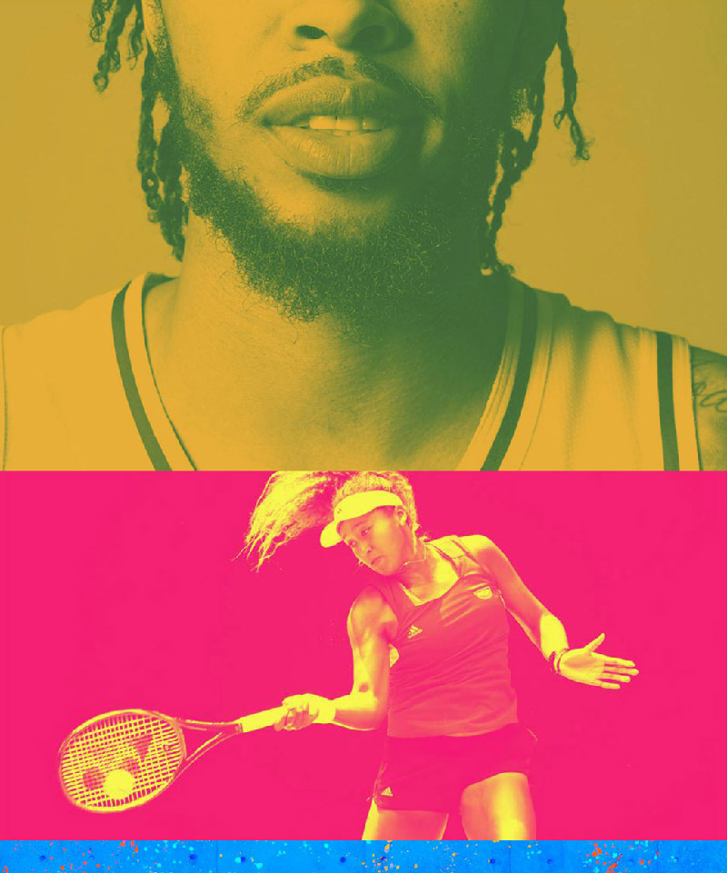

Bleacher Report / Warner Bros. Discovery
Taking a sports product from 1.0 to 2.0 without losing what made it fast.
Bleacher Report was already a product with a point of view: loud, current, fan-first, and built around the velocity of sports culture. My job was to help modernize that experience across web and mobile while keeping the thing people came for intact.
I joined for a four-year stretch as a Senior UX Designer, working inside a large Warner Bros. Discovery sports organization with product, engineering, editorial, brand, and design system partners.

The work was bigger than a redesign.
On paper, the assignment was a redesign of the Bleacher Report website and app. In practice, it was a product maturity project. The team was moving a known experience into its next generation, and that meant the design work had to solve for more than screens.
There were major product surfaces to rethink, a constrained timeline, a large team to coordinate with, and a design system that needed to become durable enough for daily use. The useful work happened in the middle of all of that: turning unclear product ideas into flows, flows into decisions, and decisions into frontend-ready design.
My role was to keep things moving without making them shallow.
I worked across concept development, interaction design, presentation, and production design. Some projects were mine to drive directly. Others required joining a larger effort, finding the missing pieces, and making the design system or product flow clearer for everyone around it.
That kind of work is not always glamorous, but it is the stuff that makes big products hold together. A sports product has a lot of edge cases: live moments, editorial urgency, personalization, platform differences, and fan behavior that does not politely wait for a clean IA diagram.
What I was responsible for
- Generated end-to-end flows for new product concepts
- Designed major portions of the app experience across iOS and Android
- Led the redesign of bleacherreport.com
- Presented concepts and design rationale to cross-functional teams
- Worked interdepartmentally with product, engineering, editorial, and brand partners
- Managed my own projects within a larger redesign program
- Contributed to BR Stadium, the design system now used by other parts of WBD Sports
A design system that had to survive real product work.
BR Stadium became an important part of the work because the redesign needed more than a visual refresh. The product needed reusable decisions: components, patterns, platform behaviors, and enough structure that designers could move quickly without inventing the same thing five different ways.
Stadium was large, detailed, and deeply tied to Figma. My contribution was not just using the system, but helping shape product work in a way that made the system stronger. A good design system should reduce negotiation, not creativity. It should make the right thing easier to do repeatedly.

The website redesign was the clearest expression of the shift.
Leading the redesign of bleacherreport.com meant thinking about the web as its own product, not just a reflection of the app. The site had to carry the energy of Bleacher Report, support fast-moving editorial needs, and feel modern without becoming precious.
The work involved shaping the experience from the product level down into page structures, interaction patterns, and final interface design. I cared a lot about keeping the experience scannable, direct, and resilient, because sports fans are not browsing in a calm vacuum. They are reacting to games, trades, arguments, clips, rumors, and whatever just happened five seconds ago.

Good redesign work is not about making the old thing disappear. It is about finding the strongest parts of the product and giving them a better system to live in.
What shipped
The broader program helped launch BR 2.0 across iOS and Android, along with the redesigned bleacherreport.com. The website went on to win a Webby Award for Best Sports Website, which was a nice public signal for a lot of very practical product work.
- Launched redesigned Bleacher Report mobile app experiences
- Launched the redesigned bleacherreport.com
- Helped establish and apply the BR Stadium design system
- Supported a large product organization through high-volume redesign work